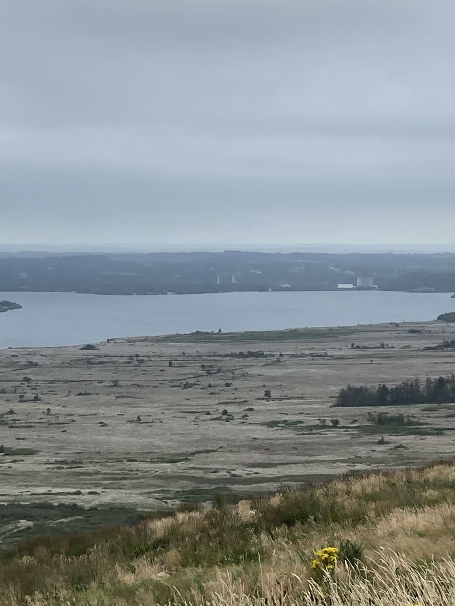
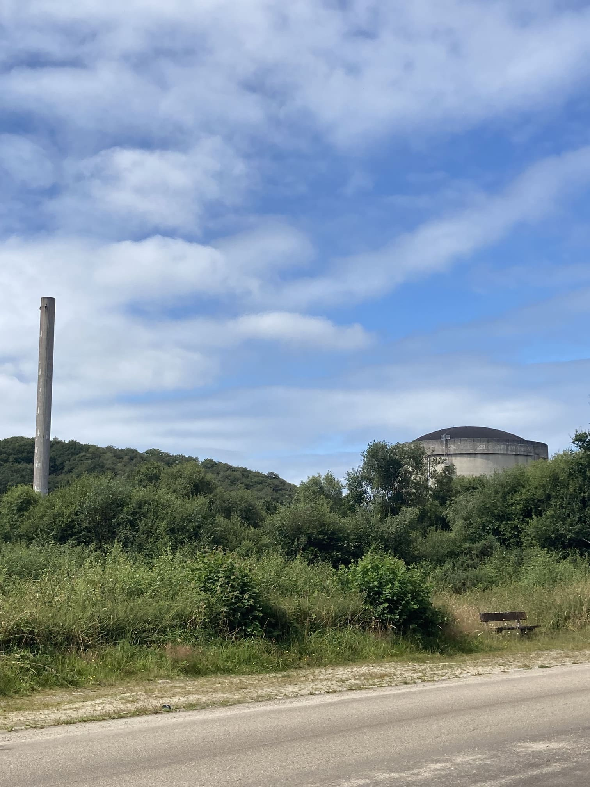
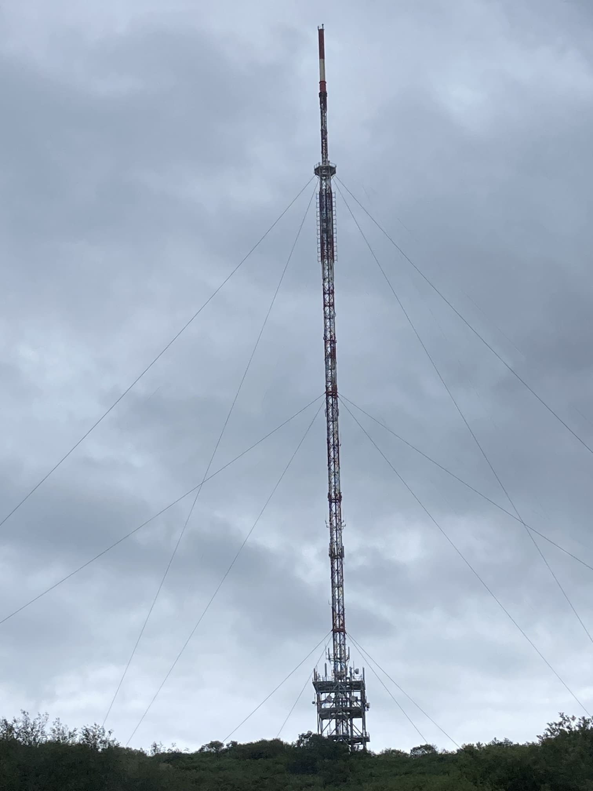
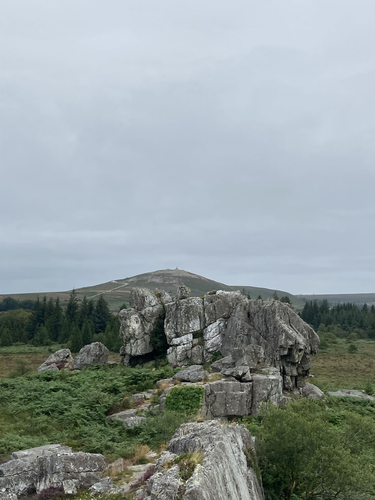
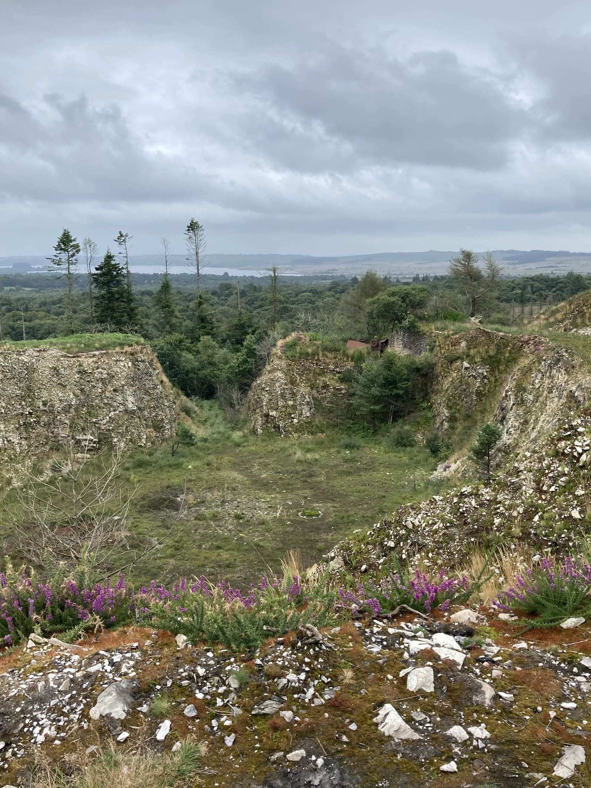
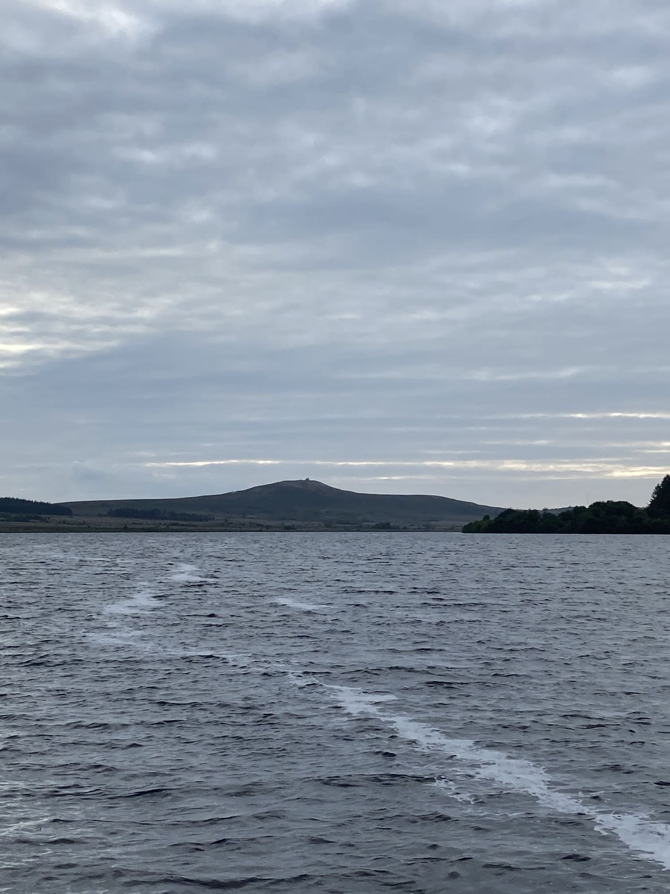
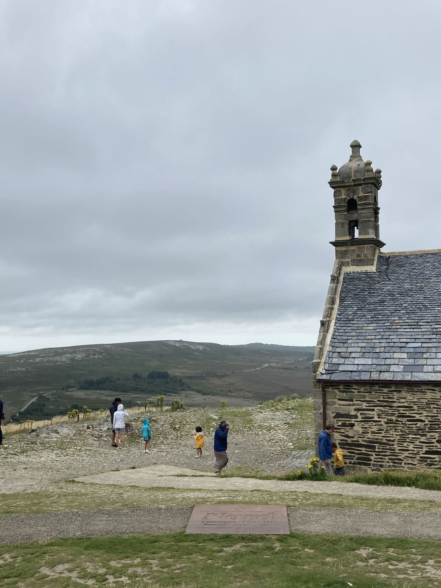
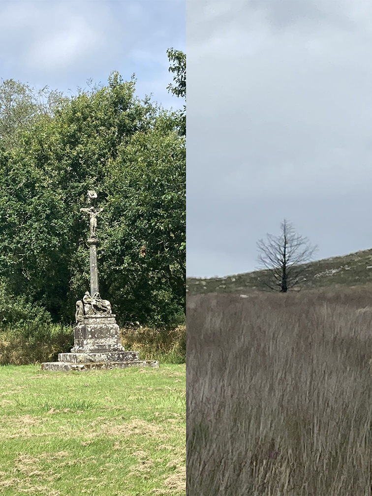

-prétaz-
le projet est en collaboration avec martin dont la recherche se concentre autour du papier et de sa sécurisation contre la falsification.
nos recherches se croisent sur ces espaces calcinés devenus TAZ (zone affectée thermiquement) dont nous faisons le portrait au travers de la production de papier. Ces territoires en papier retranscrivent le paysage des monts à un moment précis et se positionnent en opposition à des modes de cartographie dominants --cadastres--.















